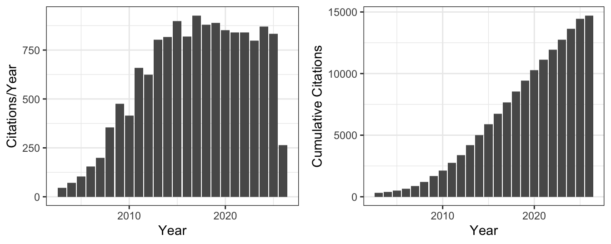

Curriculum Vitae
Contact Information
Academic Profiles and Websites
- GitHub Profile: github.com/JeffreyRacine
- Google Scholar Profile: scholar.google.com/citations?user=TXeKxGsAAAAJ
- IDEAS/RePEc Profile: ideas.repec.org/e/pra175.html
- Impactstory Profile: profiles.impactstory.org/u/0000-0002-5680-3705
- McMaster Website: experts.mcmaster.ca/display/racinej
- ORCID Profile: orcid.org/0000-0002-5680-3705
- Personal Blog: jeffreyracine.github.io/blog
- ResearchGate Profile: www.researchgate.net/profile/Jeffrey_Racine
- Scopus Profile: Author ID: 12790466400
Academic Background
Education:
Ph.D. Economics (1989), the University of Western Ontario, London, Canada (Aman Ullah, Supervisor)
M.A. Economics (1985), McMaster University
B.A. Economics (1984), Summa Cum Laude, McMaster UniversityFields of Specialization:
Econometrics and Statistics
Monetary EconomicsProfessional Affiliations:
American Economic Association
American Statistical Association
Canadian Economics Association
Econometric Society
International Symposia for Nonparametric Statistics (ISNPS)
Current Positions
- Professor, Department of Economics, McMaster University (2005-)
- Professor, Graduate Program in Statistics, Department of Mathematics and Statistics, McMaster University (2006-)
- Senator William McMaster Chair in Econometrics, McMaster University (2005-)
- Senior Research Associate, Info-Metrics Institute, American University, D.C., U.S.A (2010-)
- Senior Fellow, Rimini Center for Economic Analysis, Rimini, Italy (2010-)
Past Positions
- International Research Fellow, CREATES, Aarhus University, Aarhus, Denmark (2013-2017)
- Associate Department Chair, Department of Economics, McMaster University (2009-2011)
- Associate Professor, Department of Economics, Syracuse University, Syracuse, U.S.A. (2002-2005)
- Senior Research Associate, Center for Policy Research, Syracuse University, Syracuse, U.S.A. (2002-2005)
- Associate Professor, Department of Economics, the University of South Florida, Tampa, U.S.A. (1999-2002)
- Assistant Professor, Department of Economics, the University of South Florida, Tampa, U.S.A. (1993-1999)
- Visiting Assistant Professor, Department of Economics, the University of California San Diego, San Diego, U.S.A. (1991-1993)
- Assistant Professor, Department of Economics, York University, Toronto, Canada (1989-1993)
- Instructor, Department of Economics, the University of Western Ontario, London, Canada (1986-1989)
- Summer Intern, the International Monetary Fund, D.C., U.S.A (1988)
Honours and Awards
- Fellow, Journal of Econometrics (2014-)
- Editorial Fellow, Econometric Reviews (2018-)
- David J. and Helen C. Kahn Teaching Award (the University of South Florida, 1997, $1,000)
- Outstanding Undergraduate Teaching Award (the University of South Florida, 1997, $2,000)
- Sam Lawrence Prize in Labour Economics (McMaster University, 1984, $225)
Editorial Positions
- Guest Editor (with M. Gorfine and J. de Uña Alvarez), Journal of Nonparametric Statistics, ISNPS 2024 Special Volumes (2024-)
- Associate Editor, Econometric Reviews, (2012-)
- Deputy Editor-in-Chief, Econometrics, (2016-2019)
- Associate Editor, Journal of Econometric Methods, (2010-2018)
- Editorial Board, Book Series on Econometrics, World Scientific and Imperial College Press, (2013-)
- Editor (with L. Su and A. Ullah), Oxford Handbook of Semiparametric and Nonparametric Econometric Methods, (2011-2014)
- Guest Editor (with Q. Li), Advances in Econometrics, Volume 24, Nonparametric Methods (2009-2010)
Visiting Appointments
- Visiting Fellow, ENSAI (École nationale de la statistique et de l’analyse d l’information), Rennes, France (2022)
- Visiting Fellow, ENSAI (École nationale de la statistique et de l’analyse d l’information), Rennes, France (2016)
- Visiting Fellow, CSIR (Council for Scientific and Industrial Research), Pretoria, South Africa (2016)
- Visiting Fellow, ENSAI (École nationale de la statistique et de l’analyse d l’information), Rennes, France (2015)
- Visiting Fellow, CREATES, Aarhus University, Aarhus, Denmark (2015)
- Visiting Research Scholar, the University of Melbourne, Melbourne, Australia (2014)
- Visiting Fellow, CREATES, Aarhus University, Aarhus, Denmark (2014)
- Visiting Fellow, Cowles Foundation, Yale University, New Haven, U.S.A. (2014)
- Visiting Fellow, QuanTM Institute, Emory University, Atlanta, U.S.A. (2013)
- Visiting Fellow, CREATES, Aarhus University, Aarhus, Denmark (2011)
- Visiting Fellow, the Toulouse School of Economics, Toulouse, France (2011)
- Visiting Fellow, GREMAQ, the Toulouse School of Economics, Toulouse, France (2010)
- Visiting Fellow, Info-Metrics Institute, American University, D.C., U.S.A. (2010)
- Visiting Fellow, GREMAQ, the Toulouse School of Economics, Toulouse, France (2008)
- Visiting Fellow, Department of Economics and Finance, La Trobe University, Melbourne, Australia (2008)
- Visiting Fellow, Centre interuniversitaire de recherce en économie quantitative, McGill University, Montreal, Canada (2007)
- Visiting Fellow, Mathematical Sciences Institute, the Australian National University, Canberra, Australia (2002)
Courses Taught
Graduate:
Econometrics I
Econometrics II
Econometrics III
Topics in Econometrics
Advanced Topics in Econometrics
Advanced EconometricsUndergraduate:
Managerial Economics
Introduction to Money and Banking
International Monetary Economics
Monetary Economics
Introduction to Macroeconomics
Introduction to Microeconomics
Intermediate Price Theory
Intermediate Microeconomic Theory I
Introductory Mathematical Statistics I
Introductory Mathematical Statistics II
Econometrics I
Econometrics II
Analysis of Economic Data IIndependent Studies:
Nonparametric Kernel Estimation (1997)
Ph.D. Candidate Supervision and Examination
- Thesis Supervisor:
- Ugarte Bravo, Karen (2022, Economics, McMaster University, as of Fall 2021 on faculty in the Department of Economics at the University of Toronto)
- Sexton, Sean (2022, Economics, McMaster University, as of Summer 2022 Part-Time Instructor in the Department of Statistics, University of Toronto)
- Simardone, Camille (2021, Economics, McMaster University, as of Fall 2021 on faculty in the Department of Economics at the University of British Colombia, Okanagan Campus)
- Kiwon, Francis (2019, M.Sc., Mathematics (Statistics), McMaster University, currently a Ph.D. student in the Department of Statistics at the University of Waterloo, Canada)
- Clair, Luc (2017, Economics, McMaster University, currently on faculty at the University of Winnipeg, Canada)
- Kealey, John (2016, Economics, McMaster University)
- Thompson, John (2014, M.Sc., Mathematics (Statistics), McMaster University, as of Fall 2021 on faculty in the Department of Mathematics at the University of British Colombia, Okanagan Campus)
- Thesis Committee Member:
- Roberts, Keith (2025-, Economics, McMaster University)
- Neal, Mackenzie (2023-, Mathematics (Statistics), McMaster University)
- Owusu, Julius (2023, Economics, McMaster University, currently on faculty at the University of Bristol, England)
- Gallaugher, Michael (2020, Mathematics (Statistics), McMaster University, currently Banting Fellow on faculty at Baylor University, Texas U.S.A.)
- Shamsi, Azam (2018, School of Business, McMaster University, currently on faculty at the University of New Brunswick, Canada)
- Thomas, Stephanie (2016, Economics, McMaster University, currently on faculty at Curtin University, Australia)
- Olagunju, Waheed (2016, Economics, McMaster University, currently working at the King Abdullah Petroleum Studies and Research Center, Saudi Arabia)
- Tellez, Juan (2014, Economics, the University of Geneva, currently a Post-Doctoral Fellow at the Harvard Kennedy School, U.S.A.)
- Meredith, Evan (2012, Economics, McMaster University, currently working at Human Services Alberta, Canada)
- Li, Jinhu (2011, Economics, McMaster University, currently on faculty at the University of Melbourne, Australia)
- McLeod, Logan (2010, Economics, McMaster University, currently on faculty at Wilfrid Laurier University, Canada)
- de Oliveira, Claire (2008, Economics, McMaster University, currently on faculty at the University of York, UK)
- Liu, Long (2008, Economics, Syracuse, currently on faculty at the University of Texas at San Antonio, U.S.A.)
- Dammert, Ana (2006, Economics, Syracuse, currently on faculty at Carleton University, Canada)
- Galdo, Jose (2006, Economics, Syracuse, currently on faculty at Carleton University, Canada)
- Papanastasiou, John (1992, Economics, York, currently on faculty at the University of Macedonia, Thessaloniki, Greece)
- Thesis External Examiner:
- Håkon Otneim (2016), Mathematics, the University of Bergen, Norway.
- Henpitahewage Thilaksha Tharanganie (2015), Econometrics and Business Statistics, Monash University, Australia.
- Marcos Gómez (2011), Economics, Universidad de Zaragoza, España.
- Lindsay Tedds (2005), Economics, McMaster University.
- Yulia Kotlyarova (2005), Economics, McGill University, Canada.
- Dingding Li (2002), Economics, the University of Guelph, Canada.
University Service
McMaster University:
Ad Hoc Selection Committee for IT Support in the Faculty of Social Sciences (2013)
Ad Hoc Selection Committee for the Director of the School of Social Work (2009, 2025)
Faculty Multimedia Computing and Electronic Communication Committee (2005-)
Faculty of Social Sciences’ Tenure and Promotion Committee (2009-2012, 2012-2015, 2019-2020, 2020-2023)
Graduate Admissions Committee (2005-2007)
Hiring Committee (2005-2007)
Research High-Performance Computing Support Committee (2005-)
Research Information Technology Committee (2020-)
Selection Committee for Replacement for Technical Director for Research High-Performance Computing Support (2011-2012)
Selection Committee for the Director of the Masters in Statistics Programme (2009)
Selection Committee for Director, Research & High Performance Computer Support (2021)
Tenure and Promotion Task Force (2012)
Tenure and Promotion Committee (2005-2007, 2017-2018, 2023-2024)
Tenure and Promotion University Secretariat (2019-)
University Scholar Committee (2025)Syracuse University:
Econometrics Seminar Series Coordinator (2002-2005)
Executive Committee (2003-2005)
Freshman Forum Adviser (2003)
ICT Advisory Committee (2003-2005)
Research Evaluation Committee (2002-2005)
Statistics Program Review Committee (2003)
Tenure and Promotion Committee (2002-2005)The University of South Florida:
Committee on Scholarship (2000-2001)
Economics Department Committee A (1999-2000, 2001-2002)
Economics Department Computing Coordinator (1993-2002)
Outstanding Undergraduate Teaching Award Committee (1998)York University:
Economics Department Computing Coordinator (1989-1992)
External Service
Social Sciences and Humanities Research Council of Canada (CRSH/SSHRC)
Insight Grants Committee, Chair, (2013-2014).
International Symposia for Nonparametric Statistics (ISNPS)
Member of Board of Directors (Elected 5/21/2018-)
Member of Council Committee (Elected 1/1/2016-)
Member of Charting Committee (2011-2015)
Charting Committee, 2012 Annual Meetings (June 15-19, 2012, Chalkidiki, Greece)
Charting Committee, 2014 Annual Meetings (June 12-16, 2014, Cádiz, España)
Scientific Committee, 2024 Annual Meetings (June 25-29, 2024, Braga, Portugal)
Scientific Committee, 2026 Annual Meetings (June 22-26, 2026, Thessaloniki, Greece)Info-Metrics Institute
Memorial Prize Committee in Memory of Halbert L. White, Jr., (2016-)
Organizing Committee for the 2012 Workshop on Nonparametric Inference (November 17, 2012, the University of California, Riverside)Compute/Calcul Canada
National Resource Allocation Committee (2009-)
American Statistical Association
Publications Committee (2009)
SHARCNET
Resource Allocation Committee Chair, Round VI & VII (2007)
Site Representative (2008-)
Grants and Fellowships
Social Sciences and Humanities Research Council of Canada - Insight Grant
Title: A Foundational Framework For Functional Data Analysis
Amount: $103,883
Date: March 28, 2025 - March 31, 2030Social Sciences and Humanities Research Council of Canada - Insight Grant
Title: A Comprehensive Framework for Model Averaging
Amount: $176,593
Date: March 15, 2018 - March 31, 2023McMaster (RHPCS) Research Software Pilot Project
Title: The R package np
Amount: In kind programming
Date: Fall 2019 - Winter 2020Social Sciences and Humanities Research Council of Canada - Insight Grant
Title: A Unified Framework for Nonparametric Instrumental Variable Estimation
Amount: $206,729
Date: July 1, 2013 - June 30, 2018Social Sciences and Humanities Research Council of Canada - Standard Research Grant
Title: Adaptive Robust Kernel Estimation
Amount: $93,000 ($78,000 SSHRC, $15,000 McMaster University matching funds)
Date: July 1, 2009 - June 30, 2012Canadian Institutes of Health Research - Health Services and Policy Research Operating Grant
Joint with Paul V. Grootendorst
Title: Assessment of the Cost and Equity of Different Catastrophic Drug Insurance Options for Canadians
Amount: $233,669
Date: September 1, 2008 - August 30, 2010Social Sciences and Humanities Research Council of Canada - Standard Research Grant
Title: Kernel Estimation of a Conditional CDF with Mixed Data
Amount: $108,630 ($93,630 SSHRC, $15,000 McMaster University matching funds)
Date: July 1, 2005 - June 30, 2008Canadian Institutes of Health Research - Health Services and Policy Research Operating Grant
Joint with Carlos R. Quiñonez, David Locker, Peter V. Cooney, Raisa B. Deber, Paul V. Grootendorst, Stephen W. Hwang, and Sunjay Suri
Title: Alleviating disparities in oral health: Responding to the information needs of key decision makers (and the KT plan)
Amount: $109,900
Date: January 1, 2008 - December 31, 2008Natural Sciences and Engineering Research Council of Canada - Discovery Grant
Title: Real Time Kernel Estimation
Amount: $12,000
Date: July 1, 2005 - June 30, 2006National Science Foundation - Major Research Instrumentation Grant: Principal Investigator
Title: Acquisition of a Beowulf Class Cluster Computer to Support Interdisciplinary Faculty Research
Amount: $162,810 ($113,967 NSF, $48,843 Syracuse University required cost-share)
Date: August 1, 2003USF Division of Sponsored Research - Research and Creative Scholarship Award
Title: Nonparametric Hypothesis Testing in the Presence of Mixed Discrete and Continuous Data Types
Amount: $7,500
Date: January 1, 2001 - December 31, 2001National Institute of Health - Research Grant
Title: Advanced Statistical Tools for Biomedical Research
Amount: $20,000
Date: May 1, 1999 - December 31, 2000USF Division of Sponsored Research - Research and Creative Scholarship Award
Title: Density-Based Multinomial Choice - Theory and Applications
Amount: $7,500
Date: January 1, 1999 - December 31, 1999USF Division of Sponsored Research - Research and Creative Scholarship Award
Title: Finite-Sample Corrections for hv-Block Cross-Validation
Amount: $7,500
Date: January 1, 1997 - December 31, 1997National Science Foundation SBR Grant - Research Grant
Co-Collaborator with Halbert White, Principal Investigator
Title: Improved Estimation and Specification Testing with Parametric, Nonparametric, and Neural Network Models Using the Bootstrap
Amount: $166,650
Date: August 1, 1995 - July 31, 1998USAF Phase II Standards Technology Transfer Network - Research Grant
Title: Automatic Data Modeling
Amount: $29,000
Date: May 6, 1996 - July 25, 1998USF Division of Sponsored Research - Research Grant
Title: Testing Exchange Market Efficiency using Nonparametric and Nonlinear Estimation
Amount: $6,500
Date: January 1, 1995 - December 31, 1995Social Sciences and Humanities Research Council of Canada - Operating Grant
Title: Semiparametric Estimation of Multi-Equation Econometric Models
Amount: $15,000
Date: June 1, 1992 - June 1, 1995Natural Sciences and Engineering Research Council of Canada - Research Grant
Title: Estimation of Multivariate Systems Models: A Heteroscedasticity-Consistent Approach
Amount: $27,000
Date: April 1, 1991 - April 1, 1994Social Sciences and Humanities Research Council of Canada - Strategic Grant
Joint work with D. Shapiro, J.B. Smith, and M. Stelcner
Title: The Gender Earnings Gap and Labour Market Discrimination in Canada: A Reassessment and Extension of Econometric and Policy Analysis
Amount: $20,000
Date: October 1, 1990 - September 31, 1992Social Sciences and Humanities Research Council of Canada - Doctoral Fellowship
Amount: $12,500 per annum
Date: 1987-1988, 1988-1989Ontario Graduate Scholarship - Doctoral Scholarship
Amount: $8,500
Date: 1985-1986
Google Scholar Citation Summary
| index | All | Since 2021 |
|---|---|---|
| Citations | 14,456 | 4,262 |
| h-index | 45 | 26 |
| i10-index | 89 | 54 |
Books
1. J.S. Racine “An introduction to the advanced theory and practice of nonparametric econometrics: A replicable approach using R” (2019), Cambridge University Press, 408 pages total, ISBN: 9781108483407, doi: 10.1017/9781108649841
2. J.S. Racine “Reproducible econometrics using R” (2019), Oxford University Press, 293 pages total, ISBN: 9780190900663, doi: 10.1093/oso/9780190900663.001.0001
3. Q. Li and J.S. Racine “Nonparametric econometrics: Theory and practice” (2007), Princeton University Press, 746 pages total, ISBN: 9780691121611, URL: https://press.princeton.edu/books/hardcover/9780691121611/nonparametric-econometrics
4. Q. Li and J.S. Racine “Nonparametric econometrics: Theory and practice” (2015), Peking University Press, Chinese Edition. Translated by Ye Azhong, Wu Xiangbo et al., ISBN: 9787301249673, URL: https://book.douban.com/subject/26375376/
Edited Volumes
1. “Nonparametric econometric methods” Vol. 25 (2009), Emerald Group Publishing Limited, Volume 25 of the book series: Advances in Econometrics, ISBN: 9781849506236, Edited by Qi Li and Jeffrey S. Racine., ISBN: 9781849506236, doi: 10.1108/s0731-9053(2009)25
2. “Oxford handbook of semiparametric and nonparametric econometric methods” (2014), Oxford University Press, ISBN: 9780199857944; Edited by Jeffrey S. Racine, Liangjun Su, and Aman Ullah., ISBN: 9780199857944, doi: 10.1093/oxfordhb/9780199857944.001.0001
Packages
1. J.S. Racine and T. Hayfield “np: Nonparametric kernel smoothing methods for mixed data types” (2024), Version 0.60-18; CRAN package, doi: 10.32614/CRAN.package.np, URL: https://cran.r-project.org/package=np
2. J.S. Racine, Z. Nie, and B.D. Ripley “crs: Categorical regression splines” (2024), Version 0.15-38; CRAN package, doi: 10.32614/CRAN.package.crs, URL: https://cran.r-project.org/package=crs
3. X. Chen, T. Christensen, and S. Kankanala “npiv: Nonparametric instrumental variables estimation and inference” (2025), Version 0.1.3; CRAN package, doi: 10.32614/CRAN.package.npiv, URL: https://cran.r-project.org/package=npiv
4. J.S. Racine et al. “npRmpi: Parallel interfaces for np (archived)” (2015), Archived on CRAN (2015-03-13); see CRAN Archive, doi: 10.1002/jae.1221, URL: https://cran.r-project.org/src/contrib/Archive/npRmpi
5. J.S. Racine “ma: Model averaging” (2017), GitHub package; Version 1.0-8 (2017-06-21), URL: https://github.com/JeffreyRacine/R-Package-ma
6. J.S. Racine “hr: Hansen-racine bootstrap model average unit root test” (2018), GitHub package; Version 1.0-2 (2018-04-04), doi: 10.2139/ssrn.3156028, URL: https://github.com/JeffreyRacine/R-Package-hr
Peer Reviewed Publications
1. V. Patilea and J.S. Racine “Locally adaptive online functional data analysis”. In: Journal of Nonparametric Statistics (forthcoming)
2. J.S. Racine “Quarto the assassin”. In: Advanced studies in theoretical and applied econometrics Vol. 56 (forthcoming)
3. L. Wang, J.S. Racine, and Q. Wang “Bootstrap inference on a factor model based average treatment effects estimator”. In: Econometric Reviews Vol. 44 (1) (2025), pp. 80–89, doi: 10.1080/07474938.2024.2390392
4. J.S. Racine, Q. Li, and Q. Wang “Boundary-adaptive kernel density estimation: The case of (near) uniform density”. In: Journal of Nonparametric Statistics Vol. 36 (1) (2024), pp. 146–164, doi: 10.1080/10485252.2023.2250011
5. B.E. Hansen and J.S. Racine “Bootstrap model averaging unit root inference”. In: Advances in econometrics: Essays in honor of subal kumbhakar Vol. 46 (2024), pp. 81–98, doi: 10.1108/S0731-905320240000046005
6. P. Du, C. Parmeter, and J.S. Racine “Shape constrained kernel PDF and PMF estimation”. In: Statistica Sinica Vol. 34 (1) (2024), pp. 257–289, doi: 10.5705/ss.202021.0112
7. J.S. Racine, Q. Li, D. Yu, and L. Zheng “Optimal model averaging of mixed-data kernel-weighted spline regressions”. In: Journal of Business and Economic Statistics Vol. 41 (4) (2023), pp. 1251–1261, doi: 10.1080/07350015.2022.2118126
8. C. Simardone and J.S. Racine “Nonparametric estimation and inference: Kernel estimation from a local perspective”. In: Handbook of labor, human resources and population economics (2021), pp. 1–30, doi: 10.1007/978-3-319-57365-6_51-1
9. J.S. Racine and I. Van Keilegom “A smooth nonparametric, multivariate, mixed-data location-scale test”. In: Journal of Business & Economic Statistics Vol. 38 (4) (2020), pp. 784–795, doi: 10.1080/07350015.2019.1574227
10. S. Ma, J.S. Racine, and A. Ullah “Nonparametric estimation of marginal effects in regression-spline random effects models”. In: Econometric Reviews Vol. 39 (8) (2020), pp. 792–825, doi: 10.1080/07474938.2020.1772569
11. J.S. Racine, Q. Li, and K.X. Yan “Kernel smoothed probability mass functions for ordered datatypes”. In: Journal of Nonparametric Statistics Vol. 32 (3) (2020), pp. 563–586, doi: 10.1080/10485252.2020.1759595
12. J.S. Racine “Energy, economics, replication & reproduction”. In: Energy Economics Vol. 82 (2019), pp. 264–275, doi: 10.1016/j.eneco.2017.06.027
13. C. Parmeter and J.S. Racine “Nonparametric estimation and inference for panel data models”. In: Panel data econometrics: Foundations and applications Vol. 1 (2019), pp. 97–129, doi: 10.1016/B978-0-12-814367-4.00004-6
14. N. Beheshti, J.S. Racine, and E.S. Soofi “Information measures of kernel estimation”. In: Econometric Reviews Vol. 28 (1) (2019), pp. 47–68, doi: 10.1080/07474938.2016.1222236
15. C. Li, Q. Li, J.S. Racine, and D. Zhang “Optimal model averaging of varying coefficient models”. In: Statistica Sinica Vol. 28 (2018), pp. 2795–2809, doi: 10.5705/ss.202017.0034
16. S. Das and J.S. Racine “Interactive nonparametric analysis of complex nonlinear systems”. In: Physica A Vol. 510 (2018), pp. 290–301, doi: 10.1016/j.physa.2018.06.071
17. J.P. Florens, J.S. Racine, and S. Centorrino “Nonparametric instrumental variable derivative estimation”. In: Journal of Nonparametric Statistics Vol. 30 (2) (2018), pp. 368–391, doi: 10.1080/10485252.2018.1428745
18. S. Centorrino and J.S. Racine “Semiparametric varying coefficient models with endogenous covariates”. In: Annals of Economics and Statistics (128) (2017), pp. 261–295, doi: 10.15609/annaeconstat2009.128.0261
19. J.S. Racine and K. Li “Nonparametric conditional quantile estimation: A locally weighted quantile kernel approach”. In: Journal of Econometrics Vol. 201 (1) (2017), pp. 72–94, doi: 10.1016/j.jeconom.2017.06.020
20. C. Li, H. Li, and J.S. Racine “Cross-validated mixed datatype bandwidth selection for nonparametric cumulative distribution/survivor functions”. In: Econometric Reviews Vol. 36 (6-9) (2017), pp. 970–987, doi: 10.1080/07474938.2017.1307900
21. N.M. Kiefer and J.S. Racine “The smooth colonel and the reverend find common ground”. In: Econometric Reviews Vol. 36 (1-3) (2017), pp. 241–256, doi: 10.1080/07474938.2015.1114304
22. S. Koch and J.S. Racine “Health care facility choice and user fee abolition: Regression discontinuity in a multinomial choice setting”. In: Journal of the Royal Statistical Society Vol. 179 (2016), pp. 927–950, doi: 10.1111/rssa.12161
23. J.S. Racine “Local polynomial derivative estimation: Analytic or taylor?”. In: Advances in Econometrics Vol. 36 (2016), pp. 617–633, doi: 10.1108/s0731-905320160000036027
24. J. Bugden, I. Fraser, J.S. Racine, and R. Waschik “Nonparametric hedonic analysis of tax changes and house prices”. In: Global Business and Economics Review Vol. 18 (2016), pp. 533–549
25. E. Maasoumi and J.S. Racine “A solution to aggregation and an application to multidimensional “well-being” frontiers”. In: Journal of Econometrics Vol. 191 (2016), pp. 374–383, doi: 10.1016/j.jeconom.2015.12.008
26. M. Chakrabarty, A. Majumder, and J.S. Racine “Household preference distribution and welfare implication: An application of multivariate distributional statistics”. In: Journal of Applied Statistics Vol. 42 (2015), pp. 2754–2768, doi: 10.1080/02664763.2015.1049132
27. S. Ma, J.S. Racine, and L. Yang “Spline regression in the presence of categorical predictors”. In: Journal of Applied Econometrics Vol. 30 (2015), pp. 705–717, doi: 10.1002/jae.2410
28. P. Hall and J.S. Racine “Infinite order cross-validated local polynomial regression”. In: Journal of Econometrics Vol. 185 (2015), pp. 510–525, doi: 10.1016/j.jeconom.2014.06.003
29. J.S. Racine “Mixed data kernel copulas”. In: Empirical Economics Vol. 48 (2015), pp. 37–59, doi: 10.1007/s00181-015-0913-3
30. Q. Gao, L. Liu, and J.S. Racine “A partially linear kernel estimator for categorical data”. In: Econometric Reviews Vol. 34 (6-10) (2015), pp. 958–977, doi: 10.1080/07474938.2014.956613
31. K. Gyimah-Brempong and J.S. Racine “Aid and economic growth: A robust approach”. In: Journal of African Development Vol. 16 (1) (2014), pp. 1–35, doi: 10.5325/jafrideve.16.1.0001
32. J.S. Racine and C. Parmeter “Data-driven model evaluation: A test for revealed performance”. In: Handbook of applied nonparametric and semiparametric econometrics and statistics (2014), pp. 308–345, doi: 10.1093/oxfordhb/9780199857944.013.010
33. P. Du, C. Parmeter, and J.S. Racine “Nonparametric kernel regression with multiple predictors and multiple shape constraints”. In: Statistica Sinica Vol. 23 (3) (2013), pp. 1343–1372
34. C. Li and J.S. Racine “A smooth nonparametric conditional density test for categorical responses”. In: Econometric Theory Vol. 29 (2013), pp. 629–641, doi: 10.1017/s0266466612000382
35. Q. Li, D. Ouyang, and J.S. Racine “Categorical semiparametric varying coefficient models”. In: Journal of Applied Econometrics Vol. 28 (2013), pp. 551–579, doi: 10.1002/jae.1261
36. S. Ma and J.S. Racine “Additive regression splines with irrelevant categorical and continuous regressors”. In: Statistica Sinica Vol. 23 (2013), pp. 515–541, doi: 10.5705/ss.2011.096
37. Q. Li, J. Lin, and J.S. Racine “Optimal bandwidth selection for nonparametric conditional distribution and quantile functions”. In: Journal of Business & Economic Statistics Vol. 31 (1) (2013), pp. 57–65, doi: 10.1080/07350015.2012.738955
38. Z. Nie and J.S. Racine “The crs package: Nonparametric regression splines for continuous and categorical predictors”. In: The R Journal Vol. 4 (2012), pp. 48–56, doi: 10.32614/rj-2012-012
39. C. Parmeter and J.S. Racine “Smooth constrained frontier analysis”. In: Recent advances and future directions in causality, prediction, and specification analysis: Essays in honor of halbert l. White jr. (2012), pp. 463–488, doi: 10.1007/978-1-4614-1653-1_18
40. J.S. Racine “RStudio: A platform-independent IDE for R and sweave”. In: Journal of Applied Econometrics Vol. 27 (2012), pp. 167–172, doi: 10.1002/jae.1278
41. B. Hansen and J.S. Racine “Jackknife model averaging”. In: Journal of Econometrics Vol. 167 (2012), pp. 38–46, doi: 10.1016/j.jeconom.2011.06.019
42. K. Gyimah-Brempong, J.S. Racine, and A. Gyapong “Aid and economic growth: Sensitivity analysis”. In: Journal of International Development Vol. 24 (2012), pp. 17–33, doi: 10.1002/jid.1708
43. Z. Zhang, D. Chen, W. Liu, J.S. Racine, S. Ong, Y. Chen, G. Zhao, and Q. Ziang “Nonparametric evaluation of dynamic disease risk: A spatio-temporal kernel approach”. In: PLoS ONE Vol. 6 (3) (2011), pp. e17381, doi: 10.1371/journal.pone.0017381
44. J.S. Racine “Nonparametric kernel methods for qualitative and quantitative data”. In: The handbook of empirical economics and finance (2011), pp. 183–204, doi: 10.1201/b10440-11
45. Q. Li and J.S. Racine “Smooth varying coefficient estimation and inference for qualitative and quantitative data”. In: Econometric Theory Vol. 26 (2010), pp. 1607–1637, doi: 10.1017/s0266466609990739
46. K. Gyimah-Brempong and J.S. Racine “Aid and investment in LDCs: A robust approach”. In: Journal of International Trade & Economic Development Vol. 19 (2) (2010), pp. 319–349, doi: 10.1080/09638190802464974
47. J.S. Racine “Nonparametric and semiparametric methods in r”. In: Advances in econometrics: Nonparametric econometric methods Vol. 25 (2009), pp. 335–375, doi: 10.1108/s0731-9053(2009)0000025014
48. C. Li, D. Ouyang, and J.S. Racine “Nonparametric regression with weakly dependent data: The discrete and continuous regressor case”. In: Journal of Nonparametric Statistics Vol. 21 (6) (2009), pp. 697–711, doi: 10.1080/10485250902928435
49. N.M. Kiefer and J.S. Racine “The smooth colonel meets the reverend”. In: Journal of Nonparametric Statistics Vol. 21 (2009), pp. 521–533, doi: 10.1080/10485250902818792
50. Q. Li, J.S. Racine, and J. Wooldridge “Efficient estimation of average treatment effects with mixed categorical and continuous data”. In: Journal of Business & Economic Statistics Vol. 27 (2009), pp. 206–223, doi: 10.1198/jbes.2009.0015
51. E. Meredith and J.S. Racine “Towards reproducible econometric research: The sweave framework”. In: Journal of Applied Econometrics Vol. 24 (2009), pp. 366–374, doi: 10.1002/jae.1030
52. Q. Li, E. Maasoumi, and J.S. Racine “A nonparametric test for equality of distributions with mixed categorical and continuous data”. In: Journal of Econometrics Vol. 148 (2009), pp. 186–200, doi: 10.1016/j.jeconom.2008.10.007
53. D. Ouyang, Q. Li, and J.S. Racine “Nonparametric estimation of regression functions with discrete regressors”. In: Econometric Theory Vol. 25 (2009), pp. 1–42, doi: 10.1017/s0266466608090014
54. E. Maasoumi and J.S. Racine “A robust entropy-based test of asymmetry for discrete and continuous processes”. In: Econometric Reviews Vol. 28 (2009), pp. 246–261, doi: 10.1080/07474930802388066
55. Q. Li and J.S. Racine “Nonparametric estimation of conditional CDF and quantile functions with mixed categorical and continuous data”. In: Journal of Business & Economic Statistics Vol. 26 (4) (2008), pp. 423–434, doi: 10.1198/073500107000000250
56. T. Hayfield and J.S. Racine “Nonparametric econometrics: The np package”. In: Journal of Statistical Software Vol. 27 (5) (2008), pp. 1–32, doi: 10.18637/jss.v027.i05
57. Q. Li, J.S. Racine, and J. Wooldridge “Estimating average treatment effects with continuous and discrete covariates: The case of swan-ganz catherization”. In: American Economic Review Vol. 98 (2) (2008), pp. 357–62, doi: 10.1257/aer.98.2.357
58. J. Li and J.S. Racine “Maxima: An open source computer algebra system”. In: Journal of Applied Econometrics Vol. 23 (2008), pp. 515–523, doi: 10.1002/jae.1007
59. J.S. Racine “Nonparametric econometrics: A primer”. In: Foundations and Trends in Econometrics Vol. 3 (1) (2008), pp. 1–88, doi: 10.1561/0800000009
60. P. Hall, Q. Li, and J.S. Racine “Nonparametric estimation of regression functions in the presence of irrelevant regressors”. In: The Review of Economics and Statistics Vol. 89 (2007), pp. 784–789, doi: 10.1162/rest.89.4.784
61. T. Hayfield and J.S. Racine “The np package”. In: RNews Vol. 7 (2007), pp. 36–43, doi: 10.18637/jss.v027.i05
62. C. Hsiao, Q. Li, and J.S. Racine “A consistent model specification test with mixed categorical and continuous data”. In: Journal of Econometrics Vol. 140 (2007), pp. 802–826, doi: 10.1016/j.jeconom.2006.07.015
63. J.S. Racine and J.G. MacKinnon “Inference via kernel smoothing of bootstrap \(P\) values”. In: Computational Statistics and Data Analysis Vol. 51 (2007), pp. 5949–5957, doi: 10.1016/j.csda.2006.11.013
64. J.S. Racine and E. Maasoumi “A versatile and robust metric entropy test of time reversibility and other hypotheses”. In: Journal of Econometrics Vol. 138 (2007), pp. 547–567, doi: 10.1016/j.jeconom.2006.05.009
65. J.S. Racine and J.G. MacKinnon “Simulation-based tests that can use any number of simulations”. In: Communications in Statistics Vol. 36 (2) (2007), pp. 357–365, doi: 10.1080/03610910601161256
66. E. Maasoumi, J.S. Racine, and T. Stengos “Growth and convergence: A profile of distribution dynamics and mobility”. In: Journal of Econometrics Vol. 136 (2007), pp. 483–508, doi: 10.1016/j.jeconom.2005.11.012
67. M. Chakrabarty, A. Schmalenbach, and J.S. Racine “On the distributional effects of income in an aggregate consumption relation”. In: Canadian Journal of Economics Vol. 39 (2006), pp. 1221–1243, doi: 10.1111/j.1540-5982.2006.00388.x
68. J.S. Racine, J. Hart, and Q. Li “Testing the significance of categorical predictor variables in nonparametric regression models”. In: Econometric Reviews Vol. 25 (2006), pp. 523–544, doi: 10.1080/07474930600972590
69. K. Gyimah-Brempong and J.S. Racine “Alcohol availability and crime: A robust approach”. In: Applied Economics Vol. 38 (2006), pp. 1293–1307, doi: 10.1080/00036840500398869
70. J.S. Racine “Gnuplot 4.0: A portable interactive plotting utility”. In: Journal of Applied Econometrics Vol. 21 (2006), pp. 133–141, doi: 10.1002/jae.885
71. J.S. Racine and A. Ullah “Nonparametric econometrics”. In: Palgrave handbook of econometrics: Volume 1, econometric theory (2006), pp. 1001–1034, URL: https://link.springer.com/book/9781403941558
72. J.S. Racine and A. Ker “Rating crop insurance policies with efficient nonparametric estimators that admit mixed data types”. In: Journal of Agricultural and Resource Economics Vol. 31 (1) (2006), pp. 27–39
73. D. Ouyang, Q. Li, and J.S. Racine “Cross-validation and the estimation of probability distributions with categorical data”. In: Journal of Nonparametric Statistics Vol. 18 (1) (2006), pp. 69–100, doi: 10.1080/10485250600569002
74. J.S. Racine, Q. Li, and X. Zhu “Kernel estimation of multivariate conditional distributions”. In: Annals of Economics and Finance Vol. 5 (2) (2004), pp. 211–235
75. P. Hall, Q. Li, and J.S. Racine “Cross-validation and the estimation of conditional probability densities”. In: Journal of The American Statistical Association (2004), doi: 10.1198/016214504000000548
76. Q. Li and J.S. Racine “Predictor relevance and extramarital affairs”. In: Journal of Applied Econometrics Vol. 19 (4) (2004), pp. 205–220, doi: 10.1002/jae.777
77. C. Granger, E. Maasoumi, and J.S. Racine “A dependence metric for possibly nonlinear processes”. In: Journal of Time Series Analysis Vol. 25 (5) (2004), pp. 649–669, doi: 10.1111/j.1467-9892.2004.01866.x
78. Q. Li and J.S. Racine “Cross-validated local linear nonparametric regression”. In: Statistica Sinica Vol. 14 (2) (2004), pp. 485–512
79. J.S. Racine and Q. Li “Nonparametric estimation of regression functions with both categorical and continuous data”. In: Journal of Econometrics Vol. 119 (2004), pp. 99–130, doi: 10.1016/s0304-4076(03)00157-x
80. Q. Li and J.S. Racine “Nonparametric estimation of distributions with categorical and continuous data”. In: Journal of Multivariate Analysis Vol. 86 (2004), pp. 266–292, doi: 10.1016/s0047-259x(02)00025-8
81. J.S. Racine “Parallel distributed kernel estimation”. In: Computational Statistics and Data Analysis Vol. 40 (2002), pp. 293–302, doi: 10.1016/s0167-9473(01)00109-8
82. J.S. Racine and R. Hyndman “Using R to teach econometrics”. In: Journal of Applied Econometrics Vol. 17 (2002), pp. 175–189, doi: 10.1002/jae.657
83. E. Maasoumi and J.S. Racine “Entropy and predictability of stock market returns”. In: Journal of Econometrics Vol. 107 (2002), pp. 291–312, doi: 10.1016/s0304-4076(01)00125-7
84. J.S. Racine ““New and improved” direct marketing: A nonparametric approach”. In: Advances in econometrics: Econometric models in marketing Vol. 16 (2002), pp. 141–164, doi: 10.1016/S0731-9053(02)16007-5
85. J.S. Racine “Generalized semiparametric binary prediction”. In: Annals of Economics and Finance Vol. 3 (2002), pp. 131–147
86. J.S. Racine “Index-free, density-based multinomial choice”. In: Handbook of applied econometrics and statistical inference (2002), pp. 115–142
87. J.S. Racine “On the nonlinear predictability of stock returns using financial and economic variables”. In: Journal of Business & Economic Statistics Vol. 19 (3) (2001), pp. 380–382, doi: 10.1198/073500101681019927
88. H. White and J.S. Racine “Statistical inference, the bootstrap, and neural network modelling with application to foreign exchange rates”. In: IEEE Transactions on Neural Networks Vol. 12 (4) (2001), pp. 657–673, doi: 10.1109/72.935080
89. X. Chen, J.S. Racine, and N.R. Swanson “Semiparametric ARX neural network models with an application to forecasting inflation”. In: IEEE Transactions on Neural Networks Vol. 12 (4) (2001), pp. 674–684, doi: 10.1109/72.935081
90. J.S. Racine “Bias-corrected kernel regression”. In: Journal of Quantitative Economics Vol. 17 (1) (2001), pp. 25–42
91. J.S. Racine “A consistent cross-validatory method for dependent data: hv-block cross-validation”. In: Journal of Econometrics Vol. 99 (2001), pp. 39–61, doi: 10.1016/S0304-4076(00)00030-0
92. J.S. Racine and J.B. Smith “Nonparametric estimation of growth in replenishable resource stocks”. In: Advances in econometrics: Applying kernel and nonparametric estimation to economic topics Vol. 14 (2001), pp. 309–327
93. J.S. Racine “Feasible resampling for nonparametric kernel estimators”. In: Journal of Quantitative Economics Vol. 16 (2) (2001), pp. 19–30
94. J.S. Racine “The cygwin tools: A GNU toolkit for windows”. In: Journal of Applied Econometrics Vol. 15 (3) (2000), pp. 331–336, doi: 10.1002/1099-1255(200005/06)15:3<331::aid-jae558>3.0.co;2-g
95. J.S. Racine “Consistent significance testing for nonparametric regression”. In: Journal of Business & Economic Statistics Vol. 15 (3) (2000), pp. 369–379, doi: 10.1080/07350015.1997.10524714
96. J.S. Racine “Feasible cross-validatory model selection for general stationary processes”. In: Journal of Applied Econometrics Vol. 12 (2000), pp. 169–179, doi: 10.1002/(sici)1099-1255(199703)12:2<169::aid-jae426>3.0.co;2-p
97. G.D. Morrow, R.M. Stein, J.S. Racine, and J. Siegel-Bartelt “Computerized videokeratography of kerataconus kindreds”. In: Canadian Journal of Ophthalmology Vol. 32 (4) (1997), pp. 233–243
98. J.S. Racine and P. Rilstone “The reverse regression problem: Statistical paradox or artefact of misspecification?”. In: Canadian Journal of Economics Vol. 28 (3) (1995), pp. 502–531
99. G. González-Rivera and J.S. Racine “Maximum likelihood estimation and testing strategies in GARCH models”. In: Proceedings of the american statistical association (1995), pp. 47–54
100. J.S. Racine “An efficient cross-validation algorithm for window width selection for nonparametric kernel regression”. In: Communications in Statistics Vol. 22 (1993), pp. 1107–1114
101. A. Ullah and J.S. Racine “Smooth improved estimators of econometric parameters”. In: Readings in econometric theory and practice (1992), pp. 197–213
Published Book Reviews
1. J.S. Racine “Finite sample econometrics by Aman Ullah”. In: Economic Record Vol. 81 (1) (2005), pp. 94–95
2. J.S. Racine “Nonparametric econometrics - themes in modern econometrics by Adrian Pagan and Aman Ullah”. In: Journal of The American Statistical Association Vol. 96 (453) (2001), pp. 343–345
Work Submitted for Publication
- Chen, X., T. Christensen, S. Kankanala and J.S. Racine, “npiv: Estimation and Inference for Nonparametric Instrumental Variables Models Using R,” submitted for publication.
Workshops
XIII Foro Internacional de Estadística Aplicada, Veracruz, Mexico, May 20-21, 2024, “An Introduction to Advanced Nonparametric Estimation using R.”
University of Pretoria, South Africa, August 14-18, 2023, “ERSA Nonparametric Workshop in R.”
2nd International Congress of Applied Statistics, Escuela Superior Politecnica de Chimborazo, Riobamba, Ecuador, April 19, 2023, “Nonparametric Regression in R.”
Center for Research in Empirical Social Sciences (CRESS) Transparent Research Series, McMaster University, November 8, 2019, “Leveraging R for Reproducible Research.”
Indian Institute of Management Calcutta, August 13, 14 & 16, 2018, “Nonparametric Methods for Practitioners: Theory with Applications in R.”
The University of Crete, 13th Advanced Summer School in Economics, Rethymno, Crete, July 16-20, 2018, “Nonparametric Methods for Practitioners: Theory with Applications in R.”
Universidad del Rosario, April 16-20, 2018, “Applied Nonparametric Econometrics.”
Spring School Coimbra, May 12-14, 2016, “Applied Nonparametric Econometrics.”
CeMMAP University College London, June 22-26, 2015, “Applied Nonparametric Econometrics.”
The University of Laval, May 25-29, 2015, “Advanced Methods in Nonparametric Econometrics.”
American University, May 18-22, 2015, “Nonparametric Kernel Methods for Practitioners Across the Sciences.”
Universidad Veracruzana, May 4-8, 2015, “Semiparametric and Nonparametric Econometrics.”
The University of Melbourne, June 2-6, 2014, “Nonparametric and Semiparametric Econometric Methods.”
Københavns Universitet, May 9, 2014, “Workshop on Nonparametric Regression Analysis.”
Aarhus Universitet, April 22, 23, 29, 30, May 6, 2014, “Nonparametric and Semiparametric Methods for Dependent Data.”
Emory University Institute for Quantitative Theory and Methods, February 25, 27, March 1, 4, 6, 2013, “A Primer on Recent Advances in Nonparametric Estimation and Inference.”
54th Annual Conference of the South African Statistical Association, Nelson Mandela Metropolitan University, November 6, 2012, “Nonparametric Methods with Instrumental Variables.”
La Trobe University, May 21-24, 2012, “An Introduction to Nonparametric Econometrics.”
The University of Nevada Las Vegas, April 5-7, 2012, “Applied Nonparametric Modeling.”
Sveriges Lantbruksuniversitet, June 13-17, 2011, “Applied Nonparametric Modeling.”
The Toulouse School of Economics, May 16-25, 2011, “Sparse Categorical Nonparametric Estimation.”
The Center for Research in Econometric Analysis of TimE Series (CREATES), Aarhus University, May 9-12, 2011, “Nonparametric Econometrics for Dependent Data.”
The University of Crete, 5th Advanced Summer School in Economics, Rethymno, Crete, August 1-8, 2010, “Semiparametric and Nonparametric Econometrics.”
Eidgenössische Technische Hochschule, Zürich, Switzerland, June 14-18, 2010, “Nonparametric Econometrics.”
Sveriges Lantbruksuniversitet, Uppsala, Sweden, June 8-12, 2009, “Applied Nonparametric Econometrics.”
The University of Pretoria, South Africa, November 3-7, 2008, “ERSA Workshop on Nonparametric Methods.”
Université de Neuchâtel, Neuchâtel, Switzerland, September 1-5, 2008, “Semiparametric and Nonparametric Econometrics.”
Sveriges Lantbruksuniversitet, Uppsala, Sweden, June 9-13, 2008, “Applied Nonparametric Econometrics.”
Ryerson University, Toronto, Canada, April 29-May 8, 2008, “Nonparametric and Semiparametric Econometrics with Mixed Data.”
Centro Interuniversitario di Econometria Econometrics Summer School, Bertinoro, Italy, June 11-16, 2007, “A Unified Framework for Nonparametric and Semiparametric Econometrics with Mixed Data.”
Conference Presentations and Invited Lectures
The University of Washington, Seattle, February 18, 2025, “Boundary Corrected Adaptive Conditional Kernel Density Estimation.”
The 6th Conference of the International Symposia for Nonparametric Statistics, June 25, 2024, Braga Portgugal, “Locally Adaptive Online Functional Data Analysis.”
XIII Foro Internacional de Estadística Aplicada (keynote speaker), Veracruz, Mexico, May 22, 2024, “Locally Adaptive Online Functional Data Analysis.”
2024 Econometrics Workshop, University of Kansas, April 27, 2024, “Locally Adaptive Online Functional Data Analysis.”
6TH Workshop on Goodness-Of-Fit, Change-Point and Related Problems, Skukuza Lodge, Kruger National Park, South Africa, August 27, 2023, “Locally Adaptive Online Functional Data Analysis.”
University of Pretoria (Department of Economics), August 21, 2023, “Locally Adaptive Online Functional Data Analysis.”
Georgia Institute of Technology (Department of Economics), April 28, 2023, “Locally Adaptive Online Functional Data Analysis.”
Emory University (Department of Economics), April 24, 2023, “Locally Adaptive Online Functional Data Analysis.”
2nd International Congress of Applied Statistics, Escuela Superior Politecnica de Chimborazo, Riobamba, Ecuador (keynote speaker), April 19, 2023, “Locally Adaptive Online Functional Data Analysis.”
McMaster University (Graduate Program in Statistics), April 4, 2023, “Locally Adaptive Online Functional Data Analysis.”
McGill University (Department of Economics), March 10, 2023, “Locally Adaptive Online Functional Data Analysis.”
The 5th Conference of the International Symposia for Nonparametric Statistics, June 23, 2022, Paphos Cyprus, “Boundary-Adaptive Kernel Density Estimation.”
New Directions in Economic Theory and Empirical Economics Conference (keynote speaker), Indian Institute of Management Kolkata, August 17, 2018, “Dealing with model uncertainty via frequentist model averaging.”
Indian Statistical Institute Kolkata, August 10, 2018, “Bootstrap Model Averaging Unit Root Inference.”
Universidad del Rosario, April 19, 2018, “Bootstrap Model Averaging Unit Root Inference.”
State University of New York Albany, April 5, 2018, “Bootstrap Model Averaging Unit Root Inference.”
West Indies Economics Conference, The University of the West Indies, Kingston, Jamaica, March 8, 2018, “Bootstrap Model Averaging Unit Root Inference.”
McMaster University (Department of Mathematics and Statistics), February 27, 2018, “Bootstrap Model Averaging Unit Root Inference.”
Shape-Constrained Methods: Inference, Applications, and Practice, Banff International Research Station for Mathematical Innovation and Discovery, January 30, 2018, “Shape Constrained Nonparametric Instrumental Regression.”
32nd Annual Congress of the European Economic Association & 70th European Meeting of the Econometric Society, August 23, 2017, Lisbon, Portugal, “Optimal Model Averaging of Varying Coefficient Models.”
3rd International Workshop on Financial Markets and Nonlinear Dynamics (keynote speaker), June 2, 2017, Paris, France, “Bootstrap Model Averaging Unit Root Inference.”
The University of Cambridge, INET-cemmap Panel Data Conference held at Trinity College, May 23, 2017, “Regression Spline Random Effects Models.”
New York Econometrics Camp XII, April 8, 2017, “Optimal Model Averaging of Varying Coefficient Models.”
Syracuse University, October 5, 2016, “Nonparametric Regression-Spline Random Effects Models.”
Cornell University, October 4, 2016, “Direct Nonparametric Conditional Quantile Estimation.”
The University of Bergen, Department of Mathematics, September 22, 2016, “Direct Nonparametric Conditional Quantile Estimation.”
The University of Miami, September 27, 2016, “Nonparametric Regression-Spline Random Effects Models.”
The University of Ferrara Nonparametric Workshop, May 24 2016, “Smoothing Categorical Covariates - A Bayesian Interpretation.”
CSIR (Council for Scientific and Industrial Research, Pretoria South Africa), April 25 2016, “Recent Developments in Nonparametric Estimation - Smoothing Categorical Covariates.”
The University of the Witwatersrand CoE-MaSS (Center of Excellence in Mathematical and Statistical Sciences), April 21 2016, “Direct Nonparametric Conditional Quantile Estimation.”
The Johns Hopkins University, February 3, 2016, “Direct Nonparametric Conditional Quantile Estimation.”
The University of Queensland, November 25, 2015, “Direct Nonparametric Conditional Quantile Estimation.”
ENSAI (École nationale de la statistique et de l’analyse d l’information), November 12, 2015, “Direct Nonparametric Conditional Quantile Estimation.”
Groupement de Recherche en Economie Quantitative d’Aix-Marseille, October 27, 2015, “Nonparametric Regression-Spline Random Effects Models”
Aarhus Universitet (CREATES), September 29, 2015, “Direct Nonparametric Conditional Quantile Estimation.”
Statistische Woche 2015, Hamburg, September 15, 2015, “Smoothing Categorical Regressors.”
The University of Colorado Boulder, September 4, 2015, “Direct Nonparametric Conditional Quantile Estimation.”
11th World Congress of the Econometric Society, Montreal, August 21, 2015, “Direct Nonparametric Conditional Quantile Estimation.”
The Bristol Econometric Study Group, July 10, 2015, “Direct Nonparametric Conditional Quantile Estimation.”
CR Rao Prize Conference, Penn State University, May 14, 2015, “Direct Nonparametric Conditional Quantile Estimation.”
The University of Rochester, April 24, 2015, “Shape Constrained Nonparametric Instrumental Regression.”
New York Econometrics Camp X, April 11, 2015, “Direct Nonparametric Conditional Quantile Estimation.”
The University of Laval, April 9, 2015, “Direct Nonparametric Conditional Quantile Estimation.”
The University of California, Riverside, Conference in Honor of Aman Ullah, March 13-15, 2015, “Local Polynomial Derivative Estimation: Analytic or Taylor?”
State University of New York Stony Brook, February 25, 2015, “Direct Nonparametric Conditional Quantile Estimation.”
The University of Wisconsin-Milwaukee, February 20, 2015, “Direct Nonparametric Conditional Quantile Estimation.”
McMaster University, November 26, 2014, “Direct Nonparametric Conditional Quantile Estimation.”
Econometrics Conference in Honor of Esfandiar Maasoumi, Emory University, November 15, 2014, “Cross-validated Mixed Datatype Bandwidth Selection for Nonparametric Cumulative Distribution/Survivor Functions.”
The University of Waterloo, October 10, 2014, “Direct Nonparametric Conditional Quantile Estimation.”
School of Computational Science and Engineering, McMaster University, October 8, 2014, “Nonparametric Kernel Estimation: An Exact Parallel kd-tree Approach.”
The 6th Annual Health Econometrics Workshop (keynote speaker), the University of Toronto, September 26, 2014, “Recent Advances in Nonparametric Instrumental Regression.”
The 21st International Conference on Computational Statistics (COMPSTAT 2014), Geneva, Switzerland, August 21, 2014, “Nonparametric Kernel Estimation: An Exact Parallel kd-tree Approach.”
International Workshop on Applied Probability, Antalya, Turkey, June 18, 2014, “Smooth Constrained Frontier Analysis.”
Rimini Center for Economic Analysis, June 9, 2014, “The Smooth Colonel and the Reverend Find Common Ground.”
Monash University, May 30, 2014, “Infinite Order Cross-Validated Local Polynomial Regression.”
The University of Melbourne, May 28, 2014, “The Smooth Colonel and the Reverend Find Common Ground.”
La Trobe University, May 27, 2014, “Infinite Order Cross-Validated Local Polynomial Regression.”
The University of Sydney, May 23, 2014, “Infinite Order Cross-Validated Local Polynomial Regression.”
Københavns Universitet, May 9, 2014, “Infinite Order Cross-Validated Local Polynomial Regression.”
Københavns Universitet, May 9, 2014, “Nonparametric Kernel Regression: An Introduction.”
Aarhus Universitet (CREATES), April 30, 2014, “Infinite Order Cross-Validated Local Polynomial Regression.”
The Cowles Foundation, Yale University, March 31, 2014, “Shape Constrained Nonparametric Estimation and Inference - An Overview of Recent Developments.”
The Cowles Foundation, Yale University, March 26, 2014, “Infinite Order Cross-Validated Local Polynomial Regression.”
The Cowles Foundation, Yale University, March 24, 2014, “The Smooth Colonel and the Reverend Find Common Ground.”
The Singapore Management University, February 26, 2014, “Infinite Order Cross-Validated Local Polynomial Regression.”
National University of Singapore, February 25, 2014, “Infinite Order Cross-Validated Local Polynomial Regression.”
The Nanyang Technological University, Singapore, February 24, 2014, “Infinite Order Cross-Validated Local Polynomial Regression.”
The Canadian Econometrics Study Group, October 19, 2013, Waterloo, “Infinite Order Cross-Validated Local Polynomial Regression.”
The American Statistical Association Joint Statistical Meetings, Montreal, August 5, 2013, “Infinite Order Cross-Validated Local Polynomial Regression.”
Universidad de Murcia, May 15, 2013, “Infinite Order Cross-Validated Local Polynomial Regression.”
Universidad Nacional de Educación a Distancia, May 13, 2013, “Infinite Order Cross-Validated Local Polynomial Regression.”
New York Econometrics Camp VIII, April 6, 2013, “Infinite Order Cross-Validated Local Polynomial Regression.”
Yale University (Department of Economics/Cowles Foundation), March 28, 2013, “Smoothing Parameter Selection for NP Hard Problems.”
Fordham University (Department of Economics), March 26, 2013, “Infinite Order Cross-Validated Local Polynomial Regression.”
Emory University (Department of Economics), February 28, 2013, “Infinite Order Cross-Validated Local Polynomial Regression.”
Emory University (Department of Biostatistics & Bioinformatics), February 15, 2013, “Infinite Order Cross-Validated Local Polynomial Regression.”
McMaster University (Department of Mathematics and Statistics), January 29, 2013, “Infinite Order Cross-Validated Local Polynomial Regression.”
McMaster University, November 28, 2012, “Nonparametric Instrumental Derivatives.”
The University of Pretoria (Department of Economics), November 15, 2012, “Spline Regression in the Presence of Categorical Predictors.”
The University of Pretoria (Department of Statistics), November 14, 2012, “Spline Regression in the Presence of Categorical Predictors.”
The University of the Witwatersrand (Department of Statistics and Actuarial Science), November 13, 2012, “Nonparametric Kernel Regression with Multiple Predictors and Multiple Shape Constraints.”
The University of the Witwatersrand (Department of Statistics and Actuarial Science), November 12, 2012, “Spline Regression in the Presence of Categorical Predictors.”
Plenary Talk at the 54th Annual Conference of the South African Statistical Association, Nelson Mandela Metropolitan University, November 6, 2012, “Spline Regression in the Presence of Categorical Predictors.”
Nelson Mandela Metropolitan University (Department of Statistics), November 3, 2012, “An Overview of Categorical Smoothing Methods and Their Application to Splines.”
McMaster University (Department of Mathematics and Statistics), October 2, 2012, “On Reproducible Research: R, Sweave, and knitr.”
The 1st Conference of the International Society for Nonparametric Statistics, June 15, 2012, Chalkidiki Greece, “Constrained Nonparametric Instrumental Regression.”
Monash University, May 25, 2012, “Nonparametric Instrumental Derivatives.”
La Trobe University, May 18, 2012, “Nonparametric Instrumental Derivatives.”
The University of Melbourne, May 15, 2012, “Nonparametric Instrumental Derivatives.”
Cornell University, April 18, 2012, “Nonparametric Instrumental Derivatives.”
The University of California Davis, April 9, 2012, “Nonparametric Instrumental Derivatives.”
University College London, February 29, 2012, “Nonparametric Instrumental Derivatives.”
McMaster University (Department of Mathematics and Statistics), January 23, 2012, “Spline Regression in the Presence of Categorical Predictors.”
The Third French Econometrics Conference (Keynote Speaker), Aix-en-Provence, December 12, 2011, “Mitigating the Curse-of-Dimensionality in Nonparametric Regression.”
Carleton University, November 4, 2011, “Spline Regression in the Presence of Categorical Predictors.”
McMaster University, October 5, 2011, “Spline Regression in the Presence of Categorical Predictors.”
The Toulouse School of Economics, May 18, 2011, “Programming with R.”
New York Econometrics Camp VI, April 9, 2011, “Categorical Semiparametric Varying Coefficient Models.”
The University of Miami, March 25, 2011, “Smooth Constrained Frontier Analysis.”
Universidad de Zaragoza, March 3, 2011, “Spline Regression in the Presence of Categorical Predictors.”
The University of Manitoba, December 3, 2010, “Constrained Nonparametric Kernel Regression: Estimation and Inference.”
The University of Windsor (Department of Mathematics and Statistics), November 25, 2010, “Constrained Nonparametric Kernel Regression: Estimation and Inference.”
The University of Toronto (Department of Statistics), November 11, 2010, “Constrained Nonparametric Kernel Regression: Estimation and Inference.”
The Canadian Econometrics Study Group, October 22, 2010, Vancouver, “Spline Regression in the Presence of Categorical Predictors.”
New York Econometrics Camp V, October 2, 2010, “Spline Regression in the Presence of Categorical Predictors.”
The Rimini Center for Economic Analysis, June 11, 2010, “Spline Regression in the Presence of Categorical Predictors.”
Aarhus Universitet (CREATES), April 15, 2010, “Constrained Nonparametric Kernel Regression: Estimation and Inference.”
Universidad Carlos III de Madrid, April 12, 2010, “Constrained Nonparametric Kernel Regression: Estimation and Inference.”
The Toulouse School of Economics, April 2, 2010, “Computational Methods in Economics: Reproducible Research.”
Vanderbilt University, February 18, 2010, “Smooth Constrained Frontier Analysis.”
Michigan State University (Department of Statistics), February 9, 2010, “Constrained Nonparametric Kernel Regression: Estimation and Inference.”
The American University Info-Metrics Institute, January 25, 2010, “Entropy in Hypothesis Testing: Review and Applications.”
The University of Guelph, November 20, 2009, “Smooth Constrained Frontier Analysis.”
Lakehead University, November 6, 2009, “Smooth Constrained Frontier Analysis.”
Michigan State University, October 23, 2009, “Smooth Constrained Frontier Analysis.”
McMaster University (Department of Mathematics and Statistics), September 29, 2009, “Constrained Nonparametric Kernel Regression: Estimation and Inference.”
The University of Western Ontario, September 25, 2009, “Constrained Nonparametric Kernel Regression: Estimation and Inference.”
The Canadian Econometrics Study Group, September 19, 2009, “Data-Driven Model Evaluation: A Test for Revealed Performance.”
AAEA Meetings, Milwaukee, Wisconsin, July 28, 2009, “The Use of R in Econometric Modeling.”
Nuffield College, Oxford, June 19, 2009, “Constrained Nonparametric Kernel Regression: Estimation and Inference.”
AECON Workshop, Køge, Denmark, June 15, 2009, “Methods in Econometrics.”
The University of California, Riverside, May 8, 2009, “Constrained Nonparametric Kernel Regression: Estimation and Inference.”
The University of California, Los Angeles, May 6, 2009, “Constrained Nonparametric Kernel Regression: Estimation and Inference.”
The University of California, San Diego, May 5, 2009, “Constrained Nonparametric Kernel Regression: Estimation and Inference.”
New York Econometrics Camp IV, April 4, 2009, “Data-Driven Model Evaluation: A Test for Revealed Performance.”
Queens University, April 2, 2009, “Constrained Nonparametric Kernel Regression: Estimation and Inference.”
The University of British Columbia, November 28, 2008, “Constrained Nonparametric Kernel Regression: Estimation and Inference.”
The University of Victoria, November 27, 2008, “Constrained Nonparametric Kernel Regression: Estimation and Inference.”
Simon Fraser University, November 25, 2008, “Constrained Nonparametric Kernel Regression: Estimation and Inference.”
Advances in Econometrics Conference, Louisiana State University, November 15, 2008, “Nonparametric and Semiparametric Methods in R.”
Louisiana State University, November 14, 2008, “Constrained Nonparametric Kernel Regression: Estimation and Inference.”
Groupement de Recherche en Economie Quantitative d’Aix-Marseille, October 9, 2008, “Constrained Nonparametric Kernel Regression: Estimation and Inference.”
The Toulouse School of Economics, October 6, 2008, “Constrained Nonparametric Kernel Regression: Estimation and Inference.”
The Canadian Econometrics Study Group, September 27, 2008, “Jackknife Model Averaging.”
Syracuse University, September 12, 2008, “Constrained Nonparametric Kernel Regression: Estimation and Inference.”
Cornell University, April 8, 2008, “Smooth Varying-Coefficient Estimation and Inference for Qualitative and Quantitative Data.”
New York Econometrics Camp III, April 4, 2008, “Jackknife Model Averaging.”
Southern Methodist University, February 26, 2008, “Smooth Varying-Coefficient Estimation and Inference for Qualitative and Quantitative Data.”
Texas Econometrics Camp XIII, February 16, 2008, “A Nonparametric Test for Equality of Distributions with Mixed Categorical and Continuous Data.”
Monash University, February 1, 2008, “Smooth Varying-Coefficient Estimation and Inference for Qualitative and Quantitative Data.”
The University of Melbourne, January 23, 2008, “Smooth Varying-Coefficient Estimation and Inference for Qualitative and Quantitative Data.”
McMaster University, November 20, 2007, “Nonparametric Estimation of Regression Functions in the Presence of Irrelevant Regressors.”
The Virginia Polytechnical Institute, October 29, 2007, “Smooth Varying-Coefficient Nonparametric Models for Qualitative and Quantitative Data.”
Indiana University, October 19, 2007, “Kernel Regression with Irrelevant Regressors.”
The Canadian Econometrics Study Group, September 28, 2007, “Smooth Varying-Coefficient Nonparametric Models for Qualitative and Quantitative Data.”
The University of Alberta, May 11, 2007, “Nonparametric Estimation of Regression Functions in the Presence of Irrelevant Regressors.”
McGill University, April 6, 2007, “A Partially Linear Kernel Estimator for Categorical Data.”
Cornell University, February 27, 2007, “A Partially Linear Kernel Estimator for Categorical Data.”
Oregon State University, January 26, 2007, “A Partially Linear Kernel Estimator for Categorical Data.”
The South East Asia Meetings of the Econometric Society, Chennai India, December 19, 2006, “A Partially Linear Kernel Estimator for Categorical Data.”
HEC Montreal, November 16, 2006, “Consistent Specification Testing of Heteroskedastic Parametric Regression Quantile Models with Mixed Data.”
The University of Toronto, November 10, 2006, “Consistent Specification Testing of Heteroskedastic Parametric Regression Quantile Models with Mixed Data.”
SHARCNET Fall Workshop, the University of Waterloo, October 16, 2006, “Topics on scientific and statistical parallel computing using R on distributed systems.”
The Far East Meetings of the Econometric Society, Tsinghua University, Beijing, China, July 9th-12th, 2006, “Consistent Specification Testing of Heteroskedastic Parametric Regression Quantile Models with Mixed Data.”
useR! 2006, Wirtschaftsuniversität Wien, Vienna, Austria, June 16, 2006, “np: A Package for Nonparametric Kernel Smoothing with Mixed Datatypes.”
The Southern Methodist University, May 8, 2006, “Consistent Specification Testing of Heteroskedastic Parametric Regression Quantile Models with Mixed Data.”
Texas A&M University, May 4, 2006, “Consistent Specification Testing of Heteroskedastic Parametric Regression Quantile Models with Mixed Data.”
The University of Waterloo, March 31, 2006, “Nonparametric Estimation of Conditional CDF and Quantile Functions with Mixed Categorical and Continuous Data.”
New York Econometrics Camp I, February 4, 2006, “Nonparametric Estimation of Conditional CDF and Quantile Functions with Applications in Finance.”
The Georgia Institute of Technology, November 8, 2005, “Recent Developments in Kernel Smoothing with both Categorical and Continuous Data.”
The Canadian Econometrics Study Group, October 22, 2005, “Nonparametric Estimation of Conditional CDF and Quantile Functions with Mixed Categorical and Continuous Data.”
McMaster University (Department of Mathematics and Statistics), September 27, 2005, “Nonparametric Estimation of Conditional CDF and Quantile Functions with Applications in Finance.”
The 9th World Congress of the Econometric Society, University College London, August 24, 2005, “Nonparametric Estimation of Conditional CDF and Quantile Functions with Mixed Categorical and Continuous Data.”
The American Statistical Association Joint Statistical Meetings, Minneapolis Minnesota, August 10, 2005, “A Nonparametric Wald Test of General Nonlinear Restrictions.”
SPIDA, York University, June 3, 2005, “Bootstrapping When Only a Small Number of Replications are Possible.”
The University of Toronto, May 26, 2005, Keynote Speaker, Canadian Health Economics Study Group, “Nonparametric Methods for Mixed Categorical and Continuous Processes with Applications in the Health Arena.”
Texas A&M University, January 19, 2005, “Nonparametric Estimation of Conditional CDF and Quantile Functions with Mixed Categorical and Continuous Data.”
Southern Economic Association, November 21, 2004, “A Nonparametric Test for Equality of Distributions with Mixed Categorical and Continuous Data.”
The University of California Riverside, November 8, 2004, “Kernel Methods in Mixed Data Models.”
New York University, November 5, 2004, “Kernel Methods in Mixed Data Models.”
The Midwest Econometrics Group, Northwestern University, October 16, 2004, “Efficient Estimation of Average Treatment Effects with Mixed Categorical and Continuous Data.”
The Canadian Econometric Study Group 2004, York University, September 25, 2004, “A Versatile and Robust Metric Entropy Test of Time Reversibility and Dependence.”
Georgia State University, September 10, 2004, “Nonparametric Estimation and Inference with Mixed Data Types.”
McMaster University, April 30, 2004, “Testing the Significance of Categorical Variables in Nonparametric Regression Models.”
McGill University, April 2, 2004, “Testing the Significance of Categorical Variables in Nonparametric Regression Models.”
Syracuse University, February 26, 2004, “Parallel Distributed Numerical Computation.”
The University of Toronto, February 2, 2004, “Testing the Significance of Categorical Variables in Nonparametric Regression Models.”
Simon Fraser University, December 2, 2003, “Testing the Significance of Categorical Variables in Nonparametric Regression Models.”
The University of British Columbia, December 1, 2003, “Testing the Significance of Categorical Variables in Nonparametric Regression Models.”
State University of New York, Binghamton, November 21, 2003, “Testing the Significance of Categorical Variables in Nonparametric Regression Models.”
Queens University, November 4, 2003, “Testing the Significance of Categorical Variables in Nonparametric Regression Models.”
The Canadian Econometric Study Group 2003, McMaster University, September 20, 2003, “A Nonparametric Analysis of the Determinants of Child Schooling in Indonesia.”
York University, September 19, 2003, “Testing the Significance of Categorical Variables in Nonparametric Regression Models.”
Syracuse University, March 26, 2003, “An Introduction to Kernel Smoothing with Mixed Data Types.”
Texas Econometrics Camp VIII, February 23, 2003, “Inference via Kernel Smoothing of Bootstrap P Values.”
Southern Methodist University, February 21, 2003, “Testing the Significance of Categorical Variables in Nonparametric Regression Models.”
The University of Guelph, November 15, 2002, “Nonparametric Estimation of Regression Functions with Discrete Explanatory Variables.”
Cornell University, October 1, 2002, “Nonparametric Estimation of Regression Functions with Discrete Explanatory Variables.”
The Australian National University, September 20, 2002, “To smooth or not to smooth? Kernel smoothing for mixed data with applications.”
International Conference on Current Advances and Trends in Nonparametric Statistics held in Crete, Greece, July 15-19, 2002, “Testing the Significance of Categorical Variables in Nonparametric Regression Models.”
Texas Econometrics Camp VII, February 24, 2002, “Growth and Convergence: A Profile of Distribution Dynamics and Mobility.”
Syracuse University, November 16, 2001, “Nonparametric Estimation and Inference with Mixed Data Types.”
The University of Miami, October 12, 2001, “Nonparametric Estimation and Inference with Mixed Data Types.”
The University of Central Florida, September 7, 2001, “Cells and Kernels: Nonparametric Estimation with Mixed Data Types.”
La Trobe University, July 20, 2001, “Recent Developments in Nonparametric Kernel Estimation with Mixed Data Types.”
Monash University, July 19, 2001, “Recent Developments in Nonparametric Kernel Estimation with Mixed Data Types.”
The University of Melbourne, July 16, 2001, “Recent Developments in Nonparametric Kernel Estimation with Mixed Data Types.”
Interface ’01, The 33rd Symposium on the Interface of Computing Science and Statistics, Los Angeles, June 14, 2001, “Statistical Inference, the Bootstrap, and Neural Network Modelling with Application to Foreign Exchange Rates.”
Texas A&M University, April 19, 2001, “Nonparametric Estimation with Mixed Data Types.”
The University of Arizona, January 18, 2001, “Recent Developments in Nonparametric Kernel Estimation with Mixed Data Types.”
Southern Methodist University, November 17, 2000, “A Global Nonparametric Wald-Type Test of Equality Restrictions with Mixed Data Types.”
The University of Rochester, November 9, 2000, “Nonparametric Estimation of Regression Functions with Mixed Categorical and Continuous Data.”
Cornell University, November 7, 2000, “Nonparametric Estimation of Regression Functions with Mixed Categorical and Continuous Data.”
The Canadian Econometric Study Group 2000, the University of Guelph, September 29, 2000, “Nonparametric Estimation of Regression Functions with Mixed Categorical and Continuous Data.”
The 8th World Congress of the Econometric Society, the University of Washington, Seattle, August 16, 2000, “Nonparametric Estimation of Regression Functions with Mixed Categorical and Continuous Data.”
The 8th World Congress of the Econometric Society, the University of Washington, Seattle, August 15, 2000, “Nonparametric Estimation of Conditional Distributions with Mixed Categorical and Continuous Data.”
Southern Methodist University, April 17, 2000, “Nonparametric Estimation of Conditional Distributions with Mixed Categorical and Continuous Data.”
The University of Texas, Austin, April 15, 2000, “Nonparametric Estimation of Conditional Distributions with Mixed Categorical and Continuous Data.”
The Canadian Econometric Study Group 1999, Montreal, September 25, 1999, “A Metric Entropy and a New Test of Independence.”
The Far East Meetings of the Econometric Society, Singapore, July 3, 1999, “Generalized Semiparametric Binary Choice.”
The University of South Florida, April 23, 1999, “A Metric Entropy and a New Test of Independence.”
Texas Econometrics Camp IV, February 27, 1999, “A Metric Entropy and a New Test of Independence.”
The University of South Florida, November, 1998, “Density Based Multinomial Choice.”
Pennsylvania State University, October 9, 1998, “Density Based Multinomial Choice.”
The University of South Florida, February, 1998, “Nonparametric Maximum Likelihood Estimation and Inference.”
The North American Summer Meetings of the Econometric Society, the University of Quebec at Montreal, June, 1998, “Nonparametric Maximum Likelihood Estimation and Inference.”
The University of South Florida Department of Epidemiology and Biostatistics, May, 1998, “Nonparametric Maximum Likelihood Estimation and Inference.”
The North American Summer Meetings of the Econometric Society, Caltech, June, 1997, “Bias-Corrected Kernel Regression.”
Wilfrid Laurier University, March, 1997, “Bias-Corrected Kernel Regression.”
The University of Florida, November, 1996, “A Consistent Cross-Validatory Method for Dependent data: hv-Block Cross-Validation.”
The University of South Florida, September, 1996, “A Consistent Cross-Validatory Method for Dependent data: hv-Block Cross-Validation.”
North American Summer Meetings of the Econometric Society, July, 1994, “Statistical Inference, the Bootstrap, and Neural Network Modelling.”
Florida State University, March, 1994, “Consistent Significance Testing for Nonparametric Regression.”
The Canadian Econometric Study Group 1994, the University of Toronto, September, 1993, “Consistent Significance Testing for Nonparametric Regression.”
The University of South Florida, March, 1993, “Consistent Significance Testing for Nonparametric Regression.”
The University of California San Diego, March, 1993, “Consistent Significance Testing for Nonparametric Regression.”
The University of California Riverside, February, 1993, “Consistent Significance Testing for Nonparametric Regression.”
Georgia State University, February, 1993, “Consistent Significance Testing for Nonparametric Regression.”
South East Asia Meetings of the Econometric Society, Bombay India, December, 1992, “Bias-Corrected Kernel Regression with Heteroskedasticity-Consistent Error Bounds.”
The University of California San Diego, October 1992, “Bias-Corrected Kernel Regression with Heteroskedasticity-Consistent Error Bounds.”
McMaster University, September 1992, “The Reverse Regression Paradox: Some New Evidence.”
The Canadian Economics Association Meetings, September 1992, “The Reverse Regression Paradox: Some New Evidence.”
York University, March 1992, “The Reverse Regression Paradox: Some New Evidence.”
The University of Toronto, November, 1991, “Computer Assisted Corneal Topography of Kerataconus Kindreds.”
The Canadian Econometric Study Group 1990, September, 1990, “A Semiparametric Approach to the Estimation of Systems of Equations Models in the Presence of Heteroscedasticity of Unknown Form.”
York University, February, 1989, “Semiparametric Estimation in the Presence of Heteroscedasticity of Unknown Form.”
The University of Missouri, Columbia, February, 1989, “Semiparametric Estimation in the Presence of Heteroscedasticity of Unknown Form.”
The University of Windsor, February, 1989, “Semiparametric Estimation of SUR models: A Heteroscedasticity Consistent Approach.”
Conference Organization and Participation
Member of Scientific Committe, Conference Volume Guest Editor, Session Organizer and Chair, International Society for Nonparametric Statistics, June 25-29, 2024, held in Braga, Portugal.
Discussant for “Kernel Estimation in Regression on Vector and Function Spaces” by Sid Kankanala, Marcia Schafgans, and Victoria Zinde-Walsh, the Canadian Econometrics Study Group, McMaster University, Hamilton Ontario, October 28, 2023.
Session Organizer and Chair, International Symposia for Nonparametric Statistics, June 20-24, 2022, held in Paphos, Cyprus.
Session Organizer and Chair, International Society for Nonparametric Statistics, June 11-15, 2018, held in Salerno, Italy.
Session Chair at the New York Econometrics Camp XIII, April 7, 2018.
Session Chair at the 32nd Annual Congress of the European Economic Association & 70th European Meeting of the Econometric Society, August 23, 2017, Lisbon, Portugal.
Session Chair at the New York Econometrics Camp XII, April 8, 2017.
Session Organizer and Chair, International Society for Nonparametric Statistics, June 11-15, 2016, held in Avignon, France.
Session Chair at the New York Econometrics Camp XI, April 9, 2016.
Programme Committee member, Info-Metrics Conference on Information-Theoretic Methods of Inference held at Clare College, the University of Cambridge, April 1-2, 2016.
Session Chair at the New York Econometrics Camp X, April 12, 2015.
Panel Discussant, Info-Metrics Conference on Philosophy of Information and Information Processing, Pembroke College, the University of Oxford, March 27, 2015.
Session Organizer and Chair, International Society for Nonparametric Statistics, June 12-16, 2014, held in Cádiz, España.
Session Chair at the Info-Metrics Institute Conference on Information, Instability and Fragility in Networks, Boulder Colorado, November 15, 2013.
Discussant for “Quantile Regression for Panel Data Models with Fixed Effects and Small T: Identification and Estimation” by Maria Ponomareva, the Canadian Econometrics Study Group, Ryerson University, Toronto Ontario, October 13, 2011.
Session Chair at the New York Econometrics Camp VI, April 10, 2011.
Discussant for “Tighter Bounds in Triangular Systems” by Jun, Pinkse and Xu, Canadian Econometrics Study Group, Carleton University, Ottawa Ontario, September 19, 2009.
Session Chair at the New York Econometrics Camp IV, April 5, 2009.
Session Chair at the New York Econometrics Camp II, March 24, 2007.
Session Chair of the Nonparametric/Semiparametric Econometrics Session, South East Asia Meetings of the Econometric Society, Chennai India, December 19, 2006.
Session Chair of the Model Selection Session, Canadian Econometrics Study Group, Brock University, Niagara Falls, Ontario, October 21, 2006.
The Canadian Econometrics Study Group Program Committee, Brock University, Niagara Falls, Ontario, 2006.
Discussant for “Nonstandard Asymptotics for Quantile Regression” Chuan Goh (the University of Toronto), Canadian Econometrics Study Group, Simon Fraser University, Vancouver B.C., October 22, 2005.
Session Chair of the Nonparametric Estimation II Session at the 9th World Congress of the Econometric Society, University College London, August 24, 2005.
Session Chair of the Econometric Methods and Applications Session at the American Statistical Association Joint Statistical Meetings, Minneapolis Minnesota, August 8, 2005.
Discussant for “Kernel Estimation When Density Does Not Exist” by Victoria Zinde-Walsh (McGill University), Canadian Economics Association Meeting, May 29, 2005.
Session Chair of the Nonparametric Methods II Session at the Fifth World Congress of the Econometric Society, the University of Washington, August 15, 2000.
Session Chair of the Applied Econometrics Session at the Far East Meetings of the Econometric Society, Singapore, July 3, 1999.
Discussant for “The Relative Measurement Error Bias in Nonparametric and OLS Regression: Implications for Specification Tests” by Chris Bollinger (Georgia State University), North American Summer Meetings of the Econometric Society, the University of Quebec at Montreal, July, 1998.
Discussant for “Semiparametric Maximum Likelihood Estimation of Nonlinear Regression Models and Monte Carlo Evidence” by Jian Yang (the University of Western Ontario), Canadian Econometric Study Group meetings, Queens University, September, 1997.
Discussant for “An Algorithm for Robust Regression” by Lonnie Magee (McMaster University) at the Canadian Econometric Study Group meetings at the University of Laval, September, 1991.
Referee and Review Activities
Alfred P. Sloan Foundation, American Economic Review, American Statistician, Annals of Operations Research, Annals of Statistics, Annals of the Institute of Statistical Mathematics, Annals of Economics and Finance, Annual Review of Economics, Applied Stochastic Models in Business and Industry, Bernoulli, Brazilian Journal of Probability and Statistics, Canadian Journal of Statistics, Computational Statistics, Computational Statistics and Data Analysis, Eastern Economic Journal, Economics Bulletin, Economic Inquiry, Econometrics, Econometric Reviews, Econometric Theory, Econometrics Journal, Economic and Social Research Council, Economics Letters, Elsevier and Academic Press, Empirical Economics, Energy Economics, Estonian Sciences Foundation, European Journal of Operational Research, European Journal of Political Economy, European Review of Agricultural Economics, Georgian National Science Foundation, IEEE Neural Network Society, Health Economics, IEEE Transactions on Neural Networks, International Journal of Forecasting, International Journal of Neural Systems, Journal of African Business, Journal of Agricultural Economics, Journal of Agricultural and Applied Economics, Journal of Applied Econometrics, Journal of Business & Economic Statistics, Journal of Comparative Economics, Journal of Econometrics, Journal of Empirical Finance, Journal of Human Resources, Journal of International Money and Finance, Journal of Nonparametric Statistics, Journal of Productivity Analysis, Journal of Public Economics, Journal of Quantitative Economics, Journal of Statistical Computation and Simulation, Journal of Statistical Planning and Inference, Journal of Statistical Software, Journal of Statistical Theory and Practice, Journal of the American Statistical Association, Journal of the Royal Statistical Society (Series B), Journal of Time Series Analysis, Landscape and Urban Planning, Machine Learning Journal, National Research Foundation, National Science Foundation, Neural Networks, Oxford Bulletin of Economics and Statistics, Pakistan Journal of Statistics, Quantitative Finance, Review of Agricultural and Environmental Studies, Scandinavian Journal of Statistics, Social Sciences and Humanities Research Council of Canada, Southern Economic Journal, Springer Verlag, Studies in Nonlinear Dynamics and Econometrics, Statistical Methodology, Statistica Sinica, Statistics and Probability Letters, Technometrics, R Journal, Review of Economics and Statistics, Urban Studies.